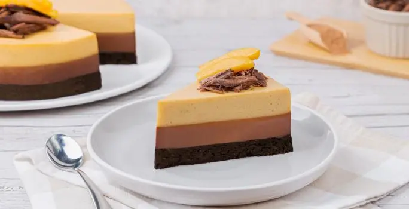

Pastel de mango con chocolate
Sorprende a tus amigos, familia y visitas con un postre diferente a lo tradicional pero igual de delicioso que los demás.
CONSEJO NUTRICIONAL
El mango es una excelente fuente de vitamina A y C.
CONSEJO CULINARIO
Puedes decorar el pastel con trozos de mango fresco y ralladura de chocolate para un toque extra.